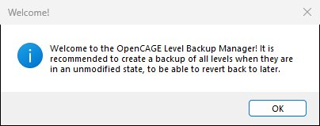
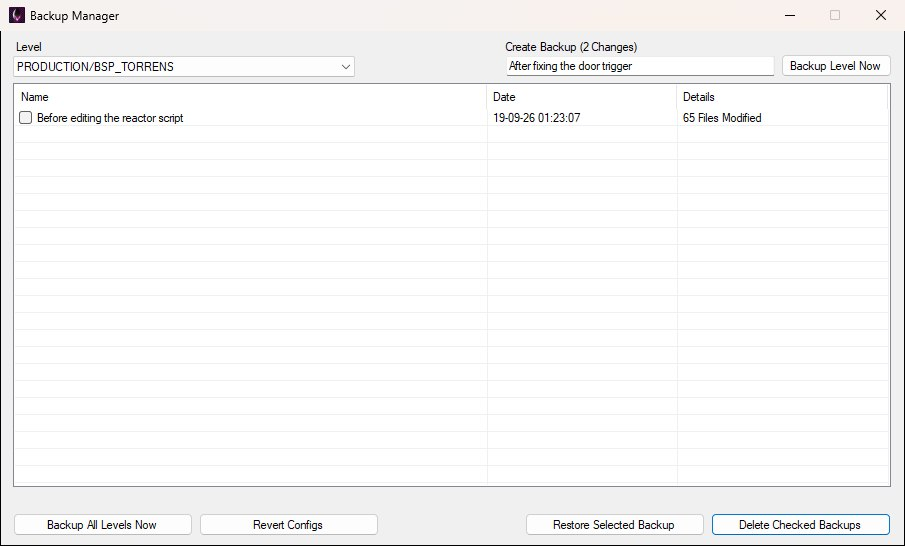
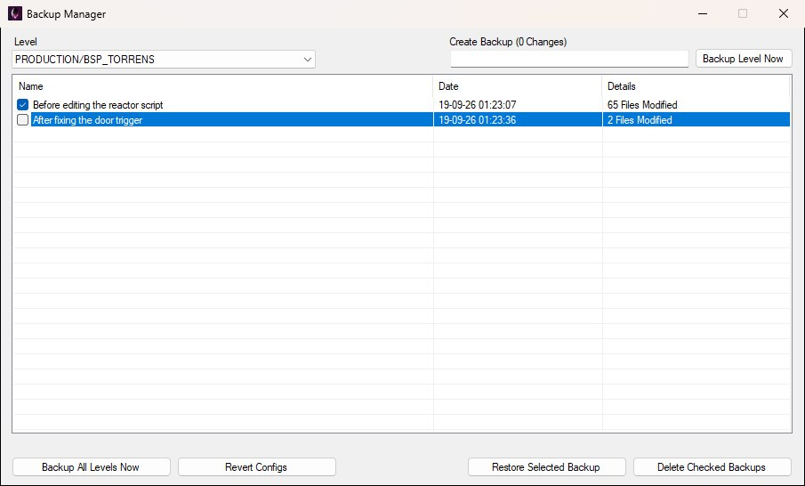
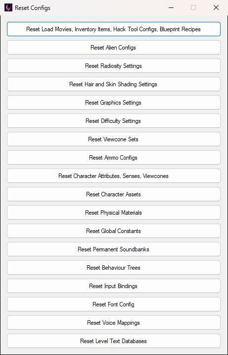

The Manage Backups button on the main toolbar, next to Launch Game, opens the Backup Manager. Use it to snapshot level files so you can roll back after experimenting in the script editor.

Backups cover everything under that level's folder in DATA/ENV/ for the current game install. They're stored under DATA/MODTOOLS/BACKUPS/. Global configs (ammo, alien settings, and so on) are separate — use Revert Configs for those.
The first time you open the Backup Manager on an install with no backups yet, OpenCAGE shows the reminder below, recommending a backup of all levels while they're still unmodified so you always have a clean restore point. Click OK and the manager opens.

Pick a level from the Level dropdown. It defaults to the level you have open (otherwise your last choice, or the first level in the list). The frontend isn't listed, so it's never covered by these backups.
The Create Backup label above the name box shows how many files differ from the latest backup for that level — e.g. Create Backup (2 Changes) in the window below. Each backup in the list has a name, date, and a details column (the first backup shows its total file count, later ones show how many files changed since the previous backup; both read as N Files Modified).

Type a name in the box under Create Backup (it can't be blank), then click Backup Level Now. While the snapshot is written, a progress bar appears under the list, the window's controls are disabled, and the window won't close until it finishes.
If that level is open in the script editor, OpenCAGE asks whether to save it first. After the snapshot is written, you'll get a short confirmation.
Backup All Levels Now walks every level in the install and creates a snapshot for each. The first pass names them First backup; later full passes use Automated backup across all levels.
This can take a while — leave OpenCAGE open until it finishes. If a level is open in the script editor, you'll get the same save prompt first, and saving from the script editor is blocked until the backup finishes.
Click one backup row in the list to highlight it (its checkbox doesn't matter), then click Restore Selected Backup.
OpenCAGE closes the game if it's running, replaces the level folder with the backup, then confirms. If that level is open in the script editor, you're asked whether to reload it so the editor matches the restored files.
If restore fails, something else is likely locking files in the level folder — close the game, other tools, or anything else using those files, then try again.
Tick the checkbox beside each backup you want to remove (the box itself, not just the highlighted row), then click Delete Checked Backups. OpenCAGE asks for confirmation, deletes those restore points, and cleans up backup data that nothing else still references.
Restore and delete use different selection styles, as shown below: restore needs a single highlighted row; delete uses the ticked boxes.

The first backup is ticked (what Delete Checked Backups would remove); the second is highlighted (what Restore Selected Backup would restore).
The Revert Configs button at the bottom of the Backup Manager opens a separate Reset Configs window, shown below. It resets global game configs (ammo, alien configs, difficulty, behaviour trees, and so on) back to stock — not level ENV backups.

There is one button per config group. Each reset closes the game if it's running, restores the matching vanilla files from OpenCAGE's built-in copies, then confirms. Use this when config edits went wrong; use level backups when script / level file edits went wrong.
For editing those configs instead of resetting them, see the Configurations docs. For behaviour trees specifically, see the Behaviour Tree Editor guide (Reset Behaviour Trees restores the global BML).